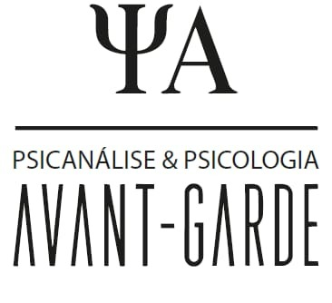
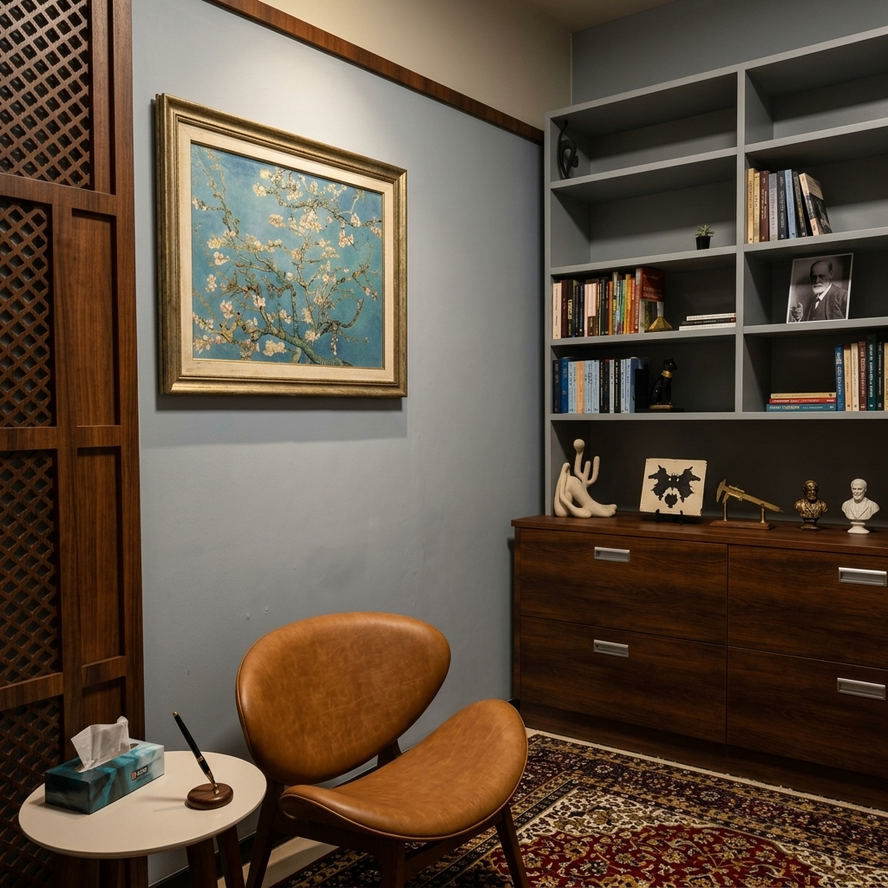
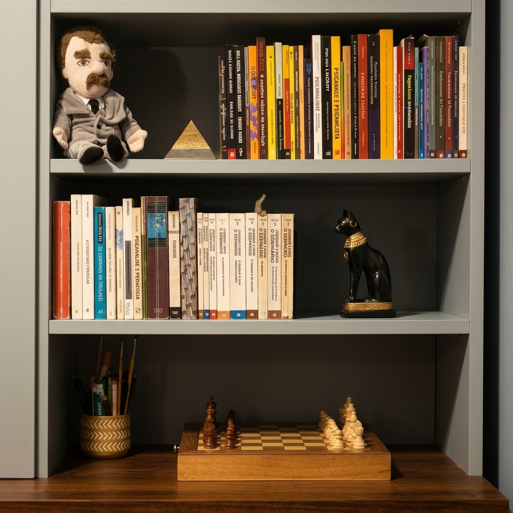
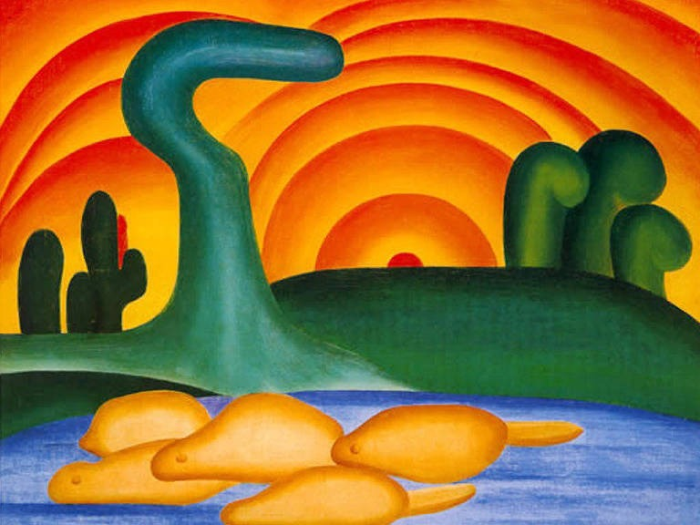
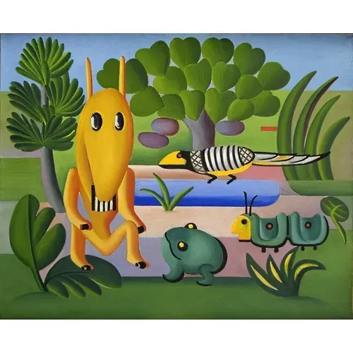

Um espaço dedicado à prática clínica em psicanálise e psicologia, concebido a partir de uma relação estrutural entre atendimento, estudo, arte e ambiente.

Identidade e Prática Clínica
O Avant-Garde constitui-se como um lugar de escuta e elaboração pautado pela tradição psicanalítica. O ambiente foi projetado para integrar a dimensão clínica à cultura de estudo que fundamenta o ofício desde Sigmund Freud.
A materialidade do espaço reflete diretamente essa proposta. O mobiliário clássico em madeira, a presença fundamental da biblioteca, o divã tradicional e a curadoria artística constroem uma atmosfera sóbria e intimamente ligada à história da psicanálise.

Salas de Atendimento

Sala 01
O primeiro ambiente do Avant-Garde caracteriza-se por sua configuração voltada ao conforto e rigor da palavra. A composição desta sala é marcada pela presença de obras de Tarsila do Amaral.
Obras presentes: Reproduções do modernismo brasileiro.
Sala 02
O segundo ambiente sustenta a prática clínica alinhada a uma estética de contemplação, marcado pela presença de reproduções de Vincent van Gogh, integrando a atmosfera do espaço à expression artística pós-impressionista.
- Ramos de amendoeira em flor (1890)
- Noite Estrelada sobre o Ródano (1888)


CONTATO
Para informações sobre o atendimento e funcionamento do espaço.
Avant-Garde — Psicanálise & Psicologia
[ Endereço completo do espaço ]
[ WhatsApp: +55 00 00000-0000 ]
[ contato@avantgarde.com.br ]